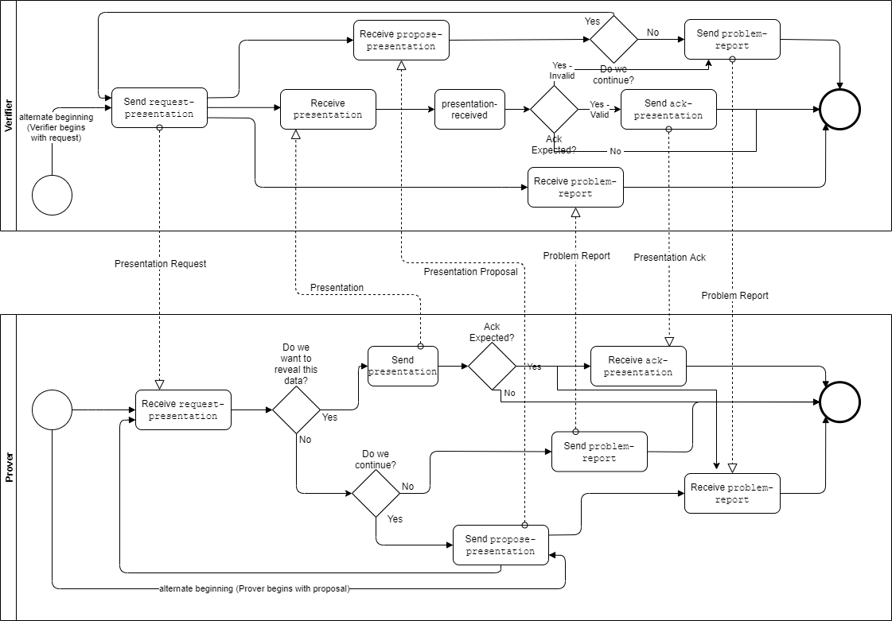

Aries RFC 0454: Present Proof Protocol 2.0¶
- Authors: Nikita Khateev, Stephen Curran
- Status: ADOPTED
- Since: 2021-04-15
- Status Note: See RFC 0453 for the corresponding issue credential protocol.
- Supersedes: RFC 0037
- Start Date: 2020-05-27
- Tags: feature, protocol, credentials, test-anomaly
Version Change Log¶
- Version 2.0 is the current version
For a period of time, versions 2.1 and 2.2 where defined in this RFC. Those definitions were added prior to any implementations, and to date, there are no known implementations available or planned. An attempt at implementing version 2.1 of the associated "issue multiple credentials" was not merged into the main branch of Aries Cloud Agent Python, deemed overly complicated and not worth the effort for what amounts to an edge case (presenting multiple presentations of the same type in a single protocol instance). Further, there is a version 3.0 of this protocol that has been specified and implemented that does not include these capabilities. Thus, a decision was made that versions 2.1 and 2.2 be removed as being not accepted by the community and overly complicated to both implement and migrate from. Those interested in seeing how those capabilities were specified can look at this protocol before they were removed.
2.0 - Alignment with RFC 0453 Issue Credential¶
- The "formats" field is added to all the messages to link the specific attachment IDs with the verifiable presentation format and version of the attachment.
- The details that are part of each message type about the different attachment formats serves as a registry of the known formats and versions.
- Version 2.0 uses <angle brackets> explicitly to mark all values that may vary between instances, such as identifiers and comments.
Summary¶
A protocol supporting a general purpose verifiable presentation exchange regardless of the specifics of the underlying verifiable presentation request and verifiable presentation format.
Motivation¶
We need a standard protocol for a verifier to request a presentation from a prover, and for the prover to respond by presenting a proof to the verifier. When doing that exchange, we want to provide a mechanism for the participants to negotiate the underlying format and content of the proof.
Tutorial¶
Name and Version¶
present-proof, version 2.0
Key Concepts¶
This protocol is about the messages to support the presentation of verifiable claims, not about the specifics of particular verifiable presentation formats. DIDComm attachments are deliberately used in messages to make the protocol agnostic to specific verifiable presentation format payloads. Links are provided in the message data element descriptions to details of specific verifiable presentation implementation data structures.
Diagrams in this protocol were made in draw.io. To make changes:
- upload the drawing HTML from this folder to the draw.io site (Import From...GitHub),
- make changes,
- export the picture and HTML to your local copy of this repo, and
- submit a pull request.
Roles¶
The roles are verifier and prover. The verifier requests the presentation of a proof and verifies the presentation, while the prover prepares the proof and presents it to the verifier. Optionally, although unlikely from a business sense, the prover may initiate an instance of the protocol using the propose-presentation message.
Goals¶
When the goals of each role are not available because of context, goal codes may be specifically included in protocol messages. This is particularly helpful to differentiate between credentials passed between the same parties for several different reasons. A goal code included should be considered to apply to the entire thread and is not necessary to be repeated on each message. Changing the goal code may be done by including the new code in a message. All goal codes are optional, and without default.
States¶
The following states are defined and included in the state transition table below.
States for Verifier¶
- request-sent
- proposal-received
- presentation-received
- abandoned
- done
States for Prover¶
- request-received
- proposal-sent
- presentation-sent
- abandoned
- done

For the most part, these states map onto the transitions shown in both the state transition table above, and in the choreography diagram (below) in obvious ways. However, a few subtleties are worth highlighting:
-
The final states for both the prover and verifier are
doneorabandoned, and once reached, no further updates to the protocol instance are expected. -
The
ack-presentationis sent or not based on the value ofwill_confirmin therequest-presentation. A verifier may send anack-presentationmessage in response to the prover including the~please_ackdecorator in thepresentationmessage. Whether anack-presentationis expected or not determines whether the statespresentation-sentandpresentation-receivedare used at all in a protocol instance. -
The
ack-presentationmessage should reflect the business validation of the proof (does the proof satisfy the business need?) not just the cryptographic verification. Ideally, those are as tightly aligned as possible. -
When a Prover makes a (counter-)proposal, it transitions to the
proposal-sentstate. This state is only present by implication in the choreography diagram; it essentially equates to the null or begin state in that the Prover does nothing until a presentation request arrives, triggering the leftmost transition for the Prover. -
Errors might occur in various places. For example, a Prover might decide not to respond to a
presentation-requestor a verifier may time out waiting for the Prover to supply apresentation. Errors should trigger aproblem-report. In this version of the protocol, all errors cause the state of both parties (the sender and the receiver of theproblem-report) to transition to the terminalabandonedstate (meaning it is no longer engaged in the protocol at all).
Choreography Diagram¶

Messages¶
The present proof protocol consists of these messages:
propose-presentation- Prover to Verifier (optional) - propose a presentation or send a counter-proposal in response to arequest-presentationmessagerequest-presentation- Verifier to Prover - request a presentationpresentation- Prover to Verifier - provide a presentation in response to a request
In addition, the ack and problem-report messages are adopted into the protocol for confirmation and error handling.
The messages that include ~attach attachments may use any form of the embedded attachment. In the examples below, the forms of the attachment are arbitrary.
The ~attach array is to be used to enable a single presentation to be requested/delivered in different verifiable presentation formats. The ability to have multiple attachments must not be used to request/deliver multiple different presentations in a single instance of the protocol.
Propose Presentation¶
An optional message sent by the prover to the verifier to initiate a proof presentation process, or in response to a request-presentation message when the prover wants to propose using a different presentation format or request. Schema:
{
"@type": "https://didcomm.org/present-proof/%VER/propose-presentation",
"@id": "<uuid-propose-presentation>",
"goal_code": "<goal-code>",
"comment": "some comment",
"formats" : [
{
"attach_id" : "<attach@id value>",
"format" : "<format-and-version>",
}
],
"proposals~attach": [
{
"@id": "<attachment identifier>",
"mime-type": "application/json",
"data": {
"json": "<json>"
}
}
]
}
Description of fields:
goal_code-- optional field that indicates the goal of the message sender.comment-- a field that provides some human readable information about the proposed presentation.formats-- contains an entry for eachfilter~attacharray entry, including an optional value of the attachment@id(if attachments are present) and the verifiable presentation format and version of the attachment. Accepted values for theformatitems are provided in the per format "Attachment" sections immediately below.proposals~attach-- an optional array of attachments that further define the presentation request being proposed. This might be used to clarify which formats or format versions are wanted.
If the proposals~attach is not provided, the attach_id item in the formats array should not be provided. That form of the propose-presentation message is to indicate the presentation formats supported by the prover, independent of the verifiable presentation request content.
Negotiation and Preview¶
Negotiation prior to the delivery of the presentation can be done using the propose-presentation and request-presentation messages. The common negotiation use cases would be about the claims to go into the presentation and the format of the verifiable presentation.
Propose Attachment Registry¶
| Presentation Format | Format Value | Link to Attachment Format | Comment |
|---|---|---|---|
| Hyperledger Indy Proof Req | hlindy/proof-req@v2.0 |
proof request format | Used to propose as well as request proofs. |
| DIF Presentation Exchange | dif/presentation-exchange/definitions@v1.0 |
propose-presentation attachment format |
|
| Hyperledger AnonCreds Proof Request | anoncreds/proof-request@v1.0 |
Proof Request format |
Used to propose as well as request proofs. |
Request Presentation¶
From a verifier to a prover, the request-presentation message describes values that need to be revealed and predicates that need to be fulfilled. Schema:
{
"@type": "https://didcomm.org/present-proof/%VER/request-presentation",
"@id": "<uuid-request>",
"goal_code": "<goal-code>",
"comment": "some comment",
"will_confirm": true,
"formats" : [
{
"attach_id" : "<attach@id value>",
"format" : "<format-and-version>",
}
],
"request_presentations~attach": [
{
"@id": "<attachment identifier>",
"mime-type": "application/json",
"data": {
"base64": "<base64 data>"
}
}
]
}
Description of fields:
goal_code-- optional field that indicates the goal of the message sender.comment-- a field that provides some human readable information about this request for a presentation.will_confirm-- an optional field that defaults tofalseto indicate that the verifier will or will not send a post-presentation confirmationackmessageformats-- contains an entry for eachrequest_presentations~attacharray entry, providing the the value of the attachment@idand the verifiable presentation request format and version of the attachment. Accepted values for theformatitems are provided in the per format Attachment registry immediately below.request_presentations~attach-- an array of attachments containing the acceptable verifiable presentation requests.
Presentation Request Attachment Registry¶
| Presentation Format | Format Value | Link to Attachment Format | Comment |
|---|---|---|---|
| Hyperledger Indy Proof Req | hlindy/proof-req@v2.0 |
proof request format | Used to propose as well as request proofs. |
| DIF Presentation Exchange | dif/presentation-exchange/definitions@v1.0 |
propose-presentation attachment format |
|
| Hyperledger AnonCreds Proof Request | anoncreds/proof-request@v1.0 |
Proof Request format |
Used to propose as well as request proofs. |
Presentation¶
This message is a response to a Presentation Request message and contains signed presentations. Schema:
{
"@type": "https://didcomm.org/present-proof/%VER/presentation",
"@id": "<uuid-presentation>",
"goal_code": "<goal-code>",
"comment": "some comment",
"formats" : [
{
"attach_id" : "<attach@id value>",
"format" : "<format-and-version>",
}
],
"presentations~attach": [
{
"@id": "<attachment identifier>",
"mime-type": "application/json",
"data": {
"sha256": "f8dca1d901d18c802e6a8ce1956d4b0d17f03d9dc5e4e1f618b6a022153ef373",
"links": ["https://ibb.co/TtgKkZY"]
}
}
]
}
Description of fields:
comment-- a field that provides some human readable information about this presentation.goal_code-- optional field that indicates the goal of the message sender.formats-- contains an entry for eachpresentations~attacharray entry, providing the the value of the attachment@idand the verifiable presentation format and version of the attachment. Accepted values for theformatitems are provided in the per format Attachment registry immediately below.presentations~attach-- an array of attachments containing the presentation in the requested format(s).
If the prover wants an acknowledgement that the presentation was accepted, this message may be decorated with the ~please-ack decorator using the OUTCOME acknowledgement request. This is not necessary if the verifier has indicated it will send an ack-presentation using the will_confirm property. Outcome in the context of this protocol is the definition of "successful" as described in Ack Presentation. Note that this is different from the default behavior as described in 0317: Please ACK Decorator. It is then best practice for the new Verifier to respond with an explicit ack message as described in the please ack decorator RFC.
Presentations Attachment Registry¶
| Presentation Format | Format Value | Link to Attachment Format | Comment |
|---|---|---|---|
| Hyperledger Indy Proof | hlindy/proof@v2.0 |
proof format | |
| DIF Presentation Exchange | dif/presentation-exchange/submission@v1.0 |
propose-presentation attachment format |
|
| Hyperledger AnonCreds Proof | anoncreds/proof@v1.0 |
Proof format |
Ack Presentation¶
A message from the verifier to the prover that the Present Proof protocol was completed successfully and is now in the done state. The message is an adopted ack from the RFC 0015 acks protocol. The definition of "successful" in this protocol means the acceptance of the presentation in whole, i.e. the proof is verified and the contents of the proof are acknowledged.
Problem Report¶
A message from the verifier to the prover that follows the presentation message to indicate that the Present Proof protocol was completed unsuccessfully and is now in the abandoned state. The message is an adopted problem-report from the RFC 0015 report-problem protocol. The definition of "unsuccessful" from a business sense is up to the verifier. The elements of the problem-report message can provide information to the prover about why the protocol instance was unsuccessful.
Either party may send a problem-report message earlier in the flow to terminate the protocol before its normal conclusion.
Reference¶
Details are covered in the Tutorial section.
Drawbacks¶
The Indy format of the proposal attachment as proposed above does not allow nesting of logic along the lines of "A and either B or C if D, otherwise A and B", nor cross-credential options such as proposing a legal name issued by either (for example) a specific financial institution or government entity.
The verifiable presentation standardization work being conducted in parallel to this in DIF and the W3C Credentials Community Group (CCG) should be included in at least the Registry tables of this document, and ideally used to eliminate the need for presentation format-specific options.
Rationale and alternatives¶
Prior art¶
The previous major version of this protocol is RFC 0037 Present Proof protocol and implementations.
Unresolved questions¶
- There might need to be a way to associate a payment with the present proof protocol.
Implementations¶
The following lists the implementations (if any) of this RFC. Please do a pull request to add your implementation. If the implementation is open source, include a link to the repo or to the implementation within the repo. Please be consistent in the "Name" field so that a mechanical processing of the RFCs can generate a list of all RFCs supported by an Aries implementation.
| Name / Link | Implementation Notes |
|---|---|